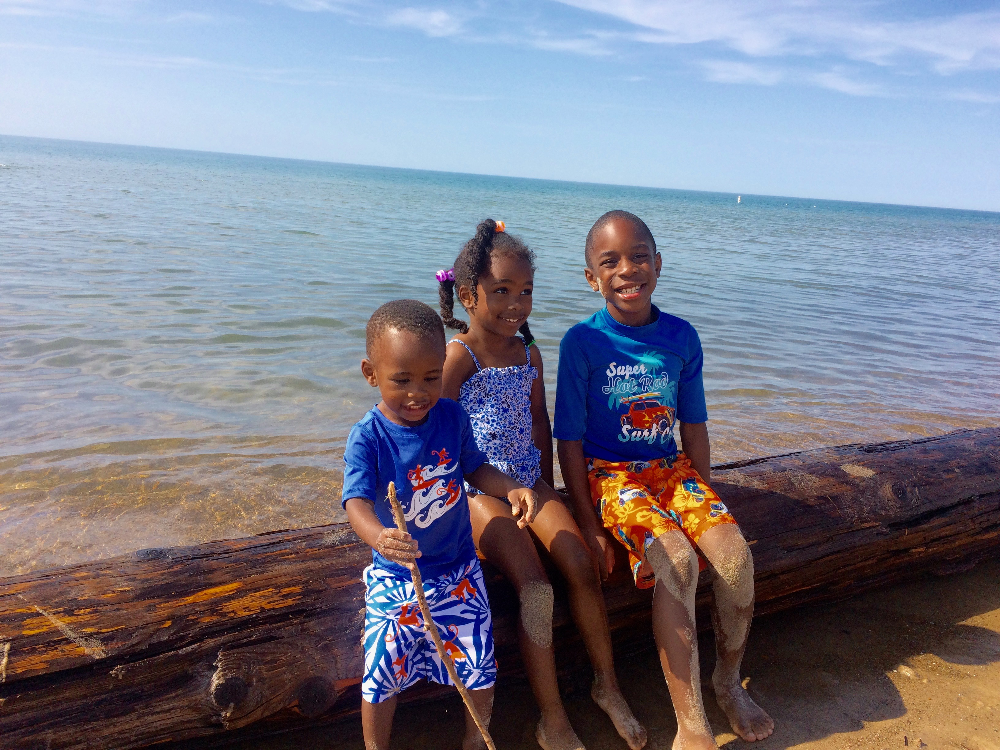
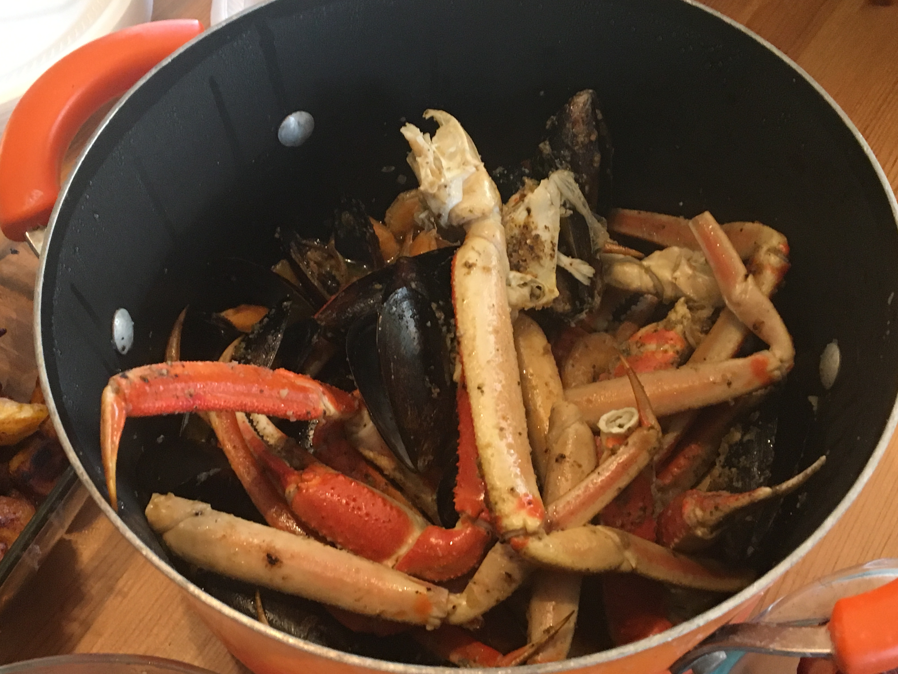
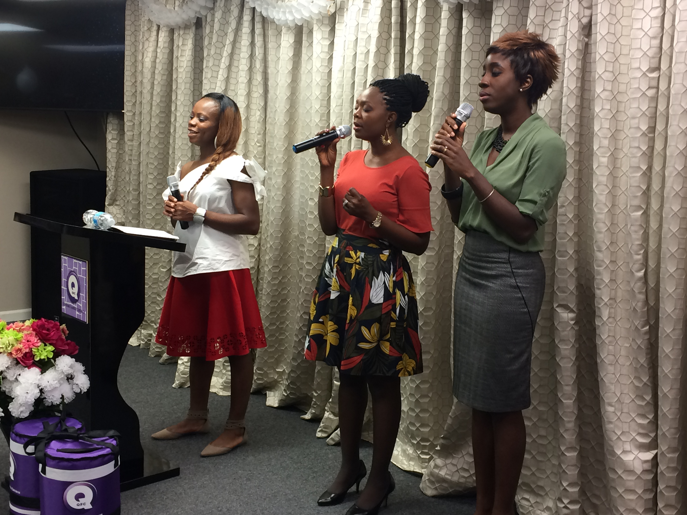

I am a blessed mother and a wife, married for 10 years to the most amazing husband ever. I came in the United States as a teenager believing that this country would be the best choice for me. So far, moving here has not disappointed me at all. I have found my husband, have grown a family, have developed a career, have made so many friends and have learned so much spiritually and intellectually. I can't wait to see what God has in store for me.
Jeremiah 29:11, "For I know the plans I have for you,” declares the LORD, “plans to prosper you and not to harm you, plans to give you hope and a future." I receive His promises for my life in Jesus' name.
SearchYou can find me at the beach, as I love traveling with my family.The beach is my favourite place to be. I have traveled to almost everywhere in the USA except the West Coast, which probably will be my next destination.
You can find me in the kitchen. I love eating my vegetables and trying new food. I love cooking for my family and for my friends. I am learning a lot about baking nowadays, from simple brownies to making quiches.
On Sunday, you will definitely find me at church, where I love to worship and praise my God. As a worship leader, I always love to share with others my love for Jesus and testify of how great He is. Thank you!
